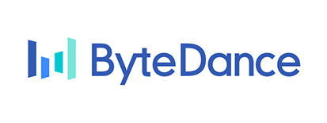

Passion如何帮助您降低研发成本

降低项目风险
通过实时监控项目计划的执行情况，提早发现风险和问题，及时调整资源和计划，保证项目稳定地走向成功，从而减少非必要的成本支出

项目质量管控
监控供应商所有完成项目的工作量与质量；利用监控数据建立智能数据模型，可提供所有供应商、设计师基于人工智能的推荐排名

员工效率管理
监控进行中项目的返工次数以帮助项目组选择更高效的供应商；员工工作时长可作为绩效考核依据；监测项目完成的百分比可预测项目完成时间
-

在过去两年中我们合作研发了近30款游戏产品，包括知名IP游戏荒野行动、阴阳师和第五人格等。同时我们试用了Share Creators软件后，整体满意度在62%左右，其中有16%为非设计类岗位员工。
-

Share Creators Inc. 连续两年获得了游族游戏2018和2019的Special Achievement Awards。
-

今年我们的产研团队试用了Share Creators 研发的管理软件, 通过对同类产品的对比，我们觉得各个功能模块都很赞。接下来将让我们的业务团队去进一步体验一下。
-

Share Creators对游戏美术行业十分了解，这款软件设计非常符合我们的需求，轻便易用！